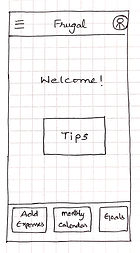
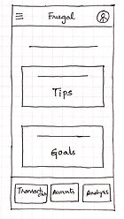
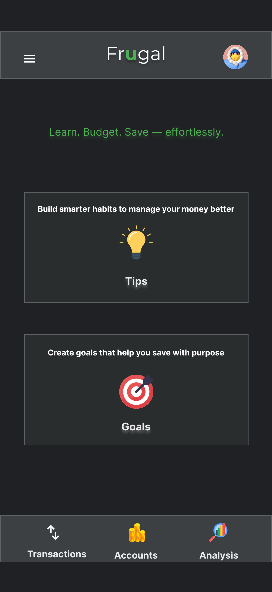
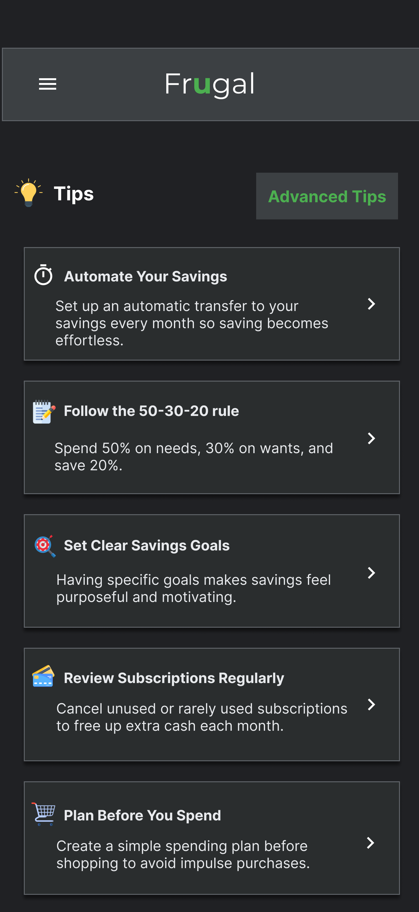
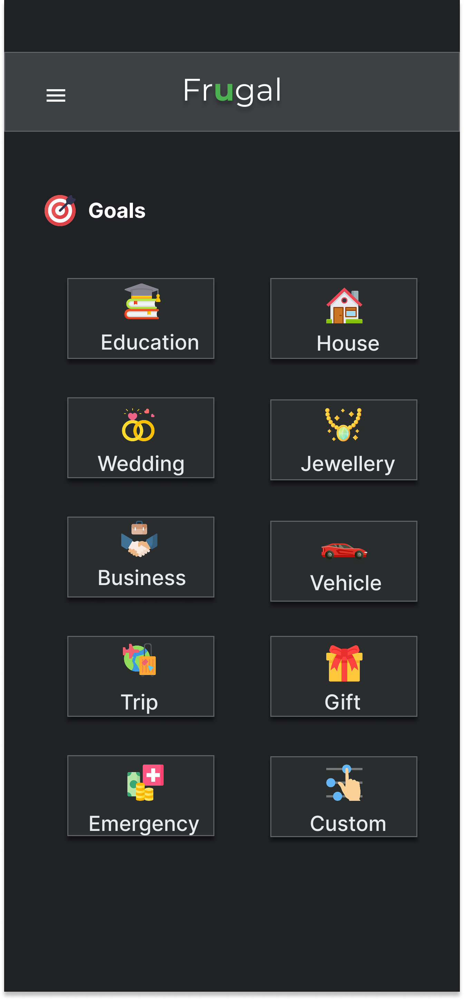
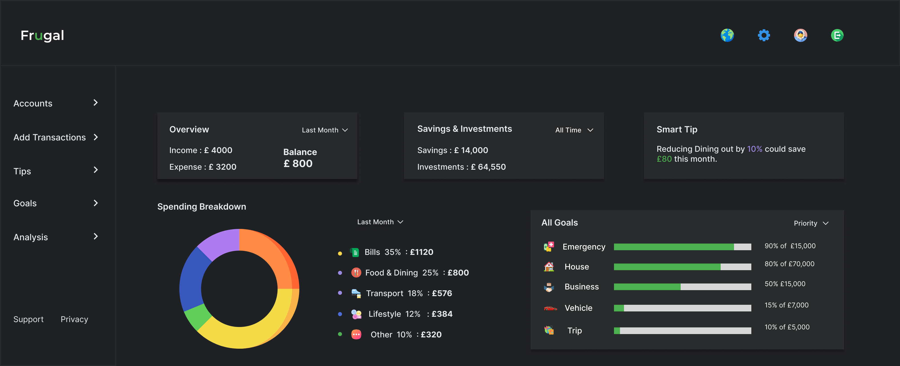

Role
UX Designer
A finance and budgeting app designed to help everyday users build confidence with spending, saving, and goals.
People wanted to save more, but felt unsure about where to begin and how to budget consistently.
Create a guided budgeting experience that makes expenses, savings goals, and financial tips easier to act on.
A tested mobile prototype with clearer navigation, guided budgeting tips, and goal-tracking flows that helped users feel more confident completing key finance tasks.
During a casual conversation with family and friends about managing household expenses, I noticed a common theme: everyone wanted to save more, but no one felt confident about how to budget consistently. The discussion wasn’t about spreadsheets or financial tools. It was about uncertainty: where to begin, how to structure expenses, and whether they were “doing it right.”
That moment revealed something deeper: people do not just need tracking tools, they need guidance. Frugal began as an exploration into how design could make budgeting feel simple, structured, and approachable for everyday users.
I led the project end-to-end following the Design Thinking framework: empathizing with users through research, defining key problem areas, ideating potential solutions, designing low- and high-fidelity prototypes in Figma, conducting usability testing, and iterating on the design based on feedback.
Through early research, I found that users were not only looking for a place to record expenses. They needed clearer guidance around what to do next, where to find key tools, and how to make budgeting feel manageable over time.
Initially, the focus was on improving expense tracking and visual clarity. However, research revealed that the real challenge was not data entry. It was building confidence and consistency in financial decision-making. Instead of designing just another budgeting tool, the problem shifted toward creating a guided experience that supports users in developing sustainable money habits over time.
With the problem reframed around confidence and consistency, the design approach focused on three guiding principles: simplicity, progressive guidance, and visual clarity. Not every user needs complex financial concepts to get started; sometimes simple, approachable ideas are more effective because they help users understand their next step and begin saving with less hesitation. Rather than overwhelming users with data, the interface was structured to prioritize essential actions, surface insights gradually, and integrate actionable tips directly within the financial workflow.
To explore solutions, I started with low-fidelity paper wireframes to quickly test layout structure, navigation patterns, and information hierarchy before digital refinement.
Paper wireframes helped compare layout options before moving into higher-fidelity design.




To address the need for clarity and confidence in financial decision-making, the solution focused on transforming budgeting from a data-heavy task into a guided behavioural experience. Rather than centering the app around charts and numbers, Frugal prioritizes structured support, meaningful goals, and actionable insights.
Instead of overwhelming users with financial metrics on the dashboard, the primary entry points are Tips and Goals. This shifts the focus from passive tracking to active learning.
Savings goals connect financial behaviour to meaningful outcomes, allowing users to create specific goals and track progress visually.
A dark theme with structured cards and focused typography helps users engage with financial information without visual clutter or distraction.
The final direction uses a dark interface, clear feature areas, and focused screens for goals, tips, and spending review.




To validate key user flows, I conducted an unmoderated usability study with 5 participants who actively manage their personal or household finances. Participants were asked to record transactions, apply a budgeting tip, create a savings goal, and review spending statistics. The goal was to assess clarity, ease of navigation, and overall confidence in using the app.
Based on these insights, I refined the navigation structure to better align with user expectations, ensuring key features were discoverable and logically grouped. Visual hierarchy on the dashboard was adjusted to clarify primary actions, and onboarding cues were strengthened to support first-time users.
The refined navigation and structured experience improved task clarity and reduced hesitation during testing. Participants responded positively to the guided approach, indicating that integrating actionable tips alongside financial tracking supports confident decision-making.
Frugal reflects a thoughtful exploration of how structured design decisions, guided by research and iteration, can shape meaningful user experiences. It represents a deliberate shift toward designing with behavioural clarity and intentional simplicity.